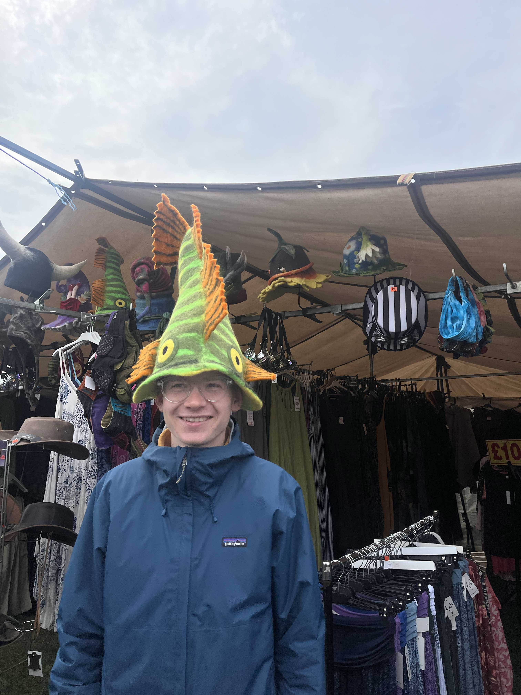

About

I love the movies and am particularly fond of animation. I’m the editor of a number of short films — maybe one day I’ll cut a feature. I have an ongoing project of trailers that I occasionally add to.
In the past, I designed some alternate movie posters and wrote about some of my favourite designers. From 2023 - 2024 I was the DJ and co-host of a radio show on the neighbouring university’s network. I have enough web design knowledge to scrape this site (and some others) together.
At the moment I'm learning more about computing and have started to self-host some services (in an effort to get off the centralised web).
It’s likely I’ll be at the cinema, on a run, playing games, listing to or playing music, reading or writing, taking photos, or getting incredibly invested in something else for an unknown period of time.
The best way to reach me is via email: hello@eddiemould.com
February 2026, London